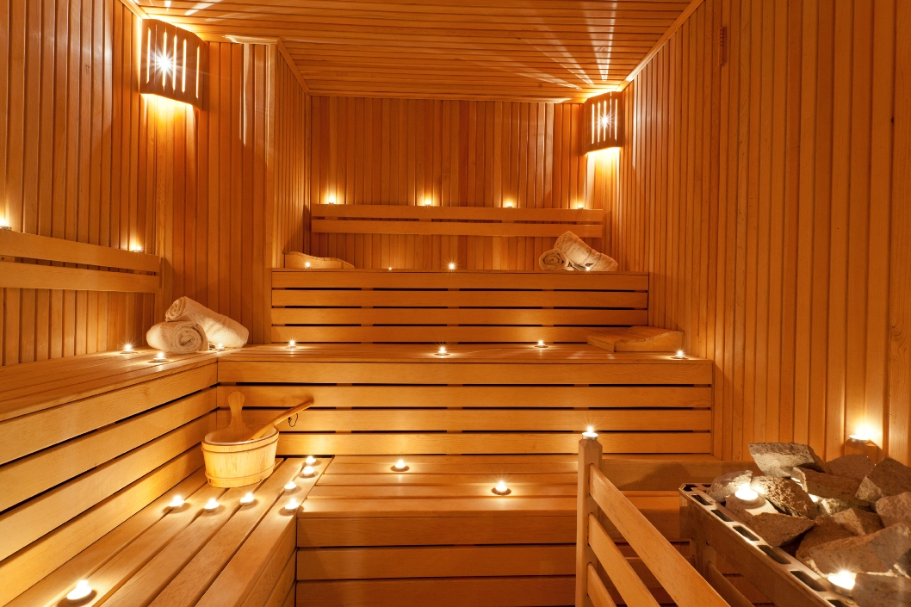

+38(063)855 25 02
+38(063)855 25 02 Городоцька, 174
Городоцька, 174Як правильно паритися в лазні
Це хороша традиція - попаритись і відпочити в лазні. Просто необхідна процедура для зими, для того щоб як слід прогрітись.
Але, важливо слідувати правилу - ніяких «міцних» напоїв всередину і купання в холодній воді. В снігу повалятись, протертись снігом - чудово! Обливання - дуже добре! Але велика маса води (при купанні) миттєво охолоджує тіло і холод проникає всередину.
Нижче привожу відрізок з книги «Вкусное питание» лікарки тибетської медицини Світлани Чойжинимаєвої:
«Гарячий тип темпераменту «Жовч» (внутрішній жар) спонукає людей на виконання процедур, пов‘язаних з дією холоду: вони завзято обливаються холодною, льодяною водою, захоплюються моржуванням, до пізньої осені займаються плаванням. Наслідки таких занять позначаться неодмінно, але через років 10-20.
Ось вам яскравий приклад: літній чоловік, років 60, виглядає набагато старше своїх років. Зайшов в кабінет, опираючись на милицю і кульгаючи на праву ногу. По зовнішніх ознаках Борис Іванович - типовий представник конституції «Жовч» - середнього росту, коренастий, з рідким волоссям, напівсивим і невеликою лисиною в області тім‘я. Лице з яскравим рум‘янцем, губи багрові з синюшним відтінком. З анамнезу вияснилось, що на сьогоднішній день Борис Іванович страждає цілим букетом захворювань, типових для людей «Жовч». Два роки назад він переніс інфаркт міокарда, є невеликий камінь в жовчному міхурі, страждає гіпертонією з 50 ти років і приступами подагри протягом 6 років. І як «переможний» заключний акорд - нещодавно поставлений діагноз «цукровий діабет». Подагра і травма правого коліна в сукупності зробили Бориса Івановича кульгаючим, він переніс 4 операції на коліні, але здатність до руху, на жаль, не відновилась.
Борис Іванович із 40 років захоплювався моржуванням. Зимою, раз в тиждень, попередньо добре закусивши і випивши по стаканчику горілочки чи коньячку, Борис Іванович разом із нерозлучними друзями любив зануритися в крижану воду. Вони весело проводили час і були задоволені своїми подвигами - після льодяної купелі зігрівались в сауні, не забуваючи приймати допінг всередину. Як же склалася доля любителів «моржування»? Підсумок сумний: із п‘яти друзів Борис Іванович залишився один. Решта пішли в інший світ - двоє отримали інсульт, третій помер від інфаркту, четвертого не змогли врятувати після гострого панкреонекрозу.
У кожної хвороби чи навіть окремого симптому є причини. Як лікар тибетської медицини, я відповідально заявляю, що різке охолодження організму неодмінно позначається на здоров‘ї (в першу чергу, на суглобах). Те, до чого прийшов в свої 60 років Борис Іванович, має причинно-наслідковий зв‘язок. Наслідки ми бачимо, а причина одна - незнання. Нам не вистачає знань про правильний спосіб життя, про правильне харчування, про те, як працює наш організм, що для нього шкідливо і чого потрібно уникати. Ми не відаємо що творимо, і не маємо поняття, які наслідки наздоженуть нас по дорозі життя через наше незнання.»
Таких же поглядів дотримуються даоси. Наприклад, в школі Shou Tao рекомендують всіляко уникати сильного і тривалого впливу холоду, загартовуватися по певних правилах. А також регулярно виганяти з організму патогенний холод, котрий увійшов у тіло. Для вигнання «холоду» баня підходить чудово.
Такщо, паримось по правилах, «міцні напої» окремо і все буде добре!
Джерело: Цигун Shou Tao Київ
Інструктор: Світлана Герасимчук
Навчання у Львові проводяться за адресою: вул. Городоцька, 174 (мотозавод)
Запис на тренування: Тел./Telegram/Viber: +38 (063) 855 25 02